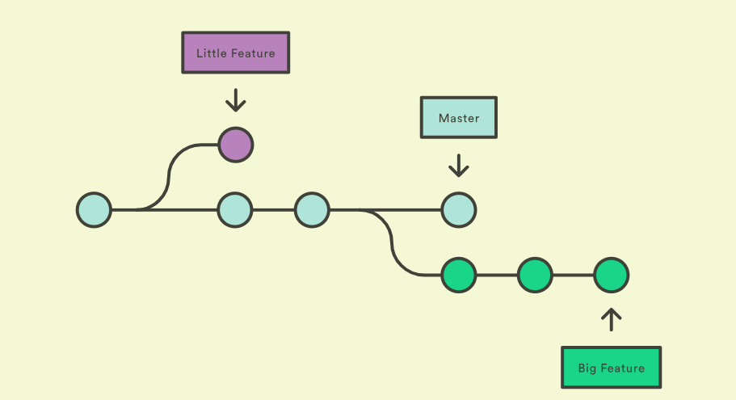
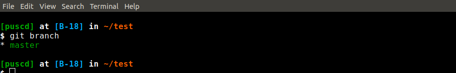
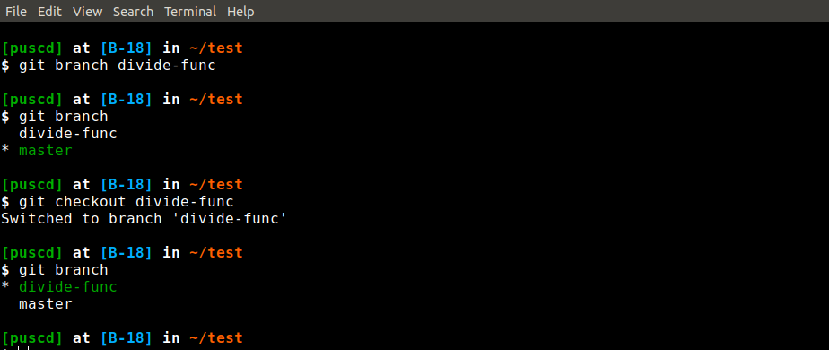
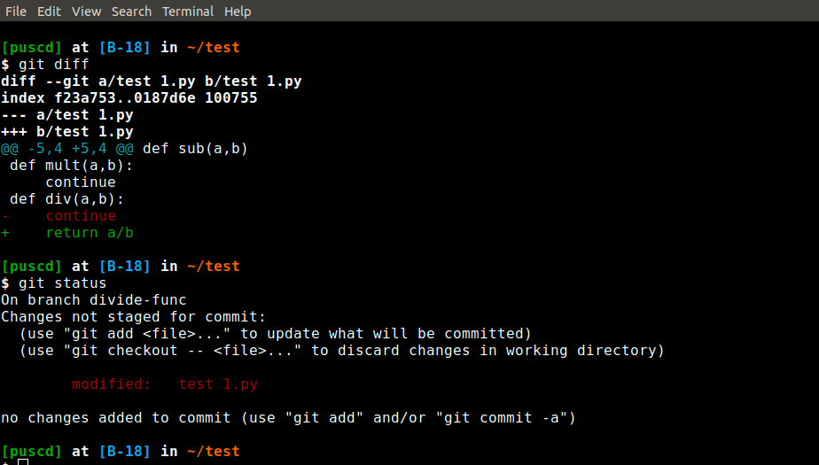
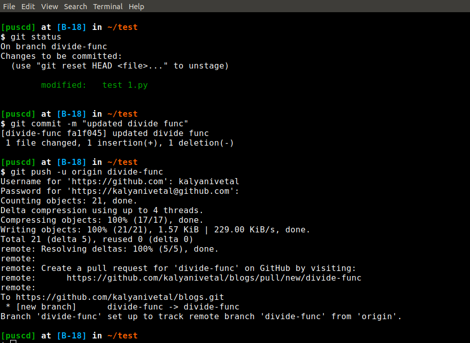
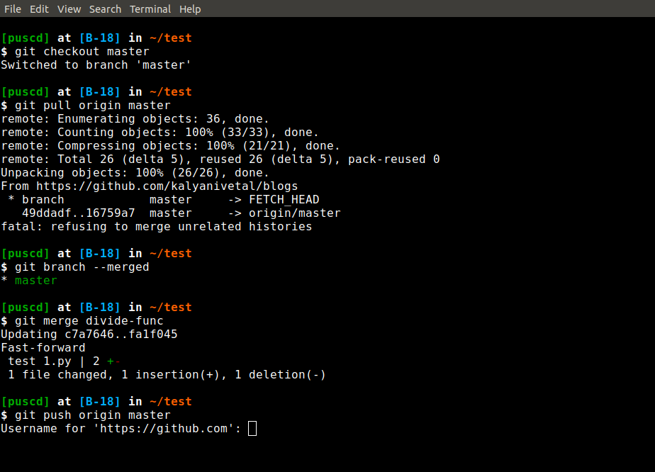
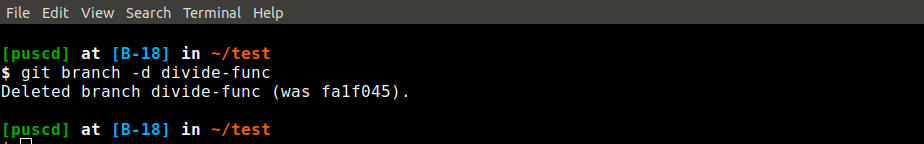

Git- Branching
I hope now you guys do had practice upon basic command line interface with git. Assuming and moving forward now will learn branching.
If you are working on master branch but you cant always keep modifying files on master branch in day to day life. What if instead we create another branch and merge it with master branch? Sounds good... :) Let's learn then.
If we are going to work on some feature then we are going to create a branch for the desired feature and the going to work on it.

The syntax for creating a branch: git branch branch-name
Here we are going to create a branch divide-func. It's syntax would be: git branch divide-func. Now if you check by git branch then you will see our divide-func branch is there. There is * sign infront of master branch which means that we are currently on master branch.
Now we have created branch and we have to shift from master branch to newly created branch. Alright, So we have to do git checkout divide-func to shift between two branches.
I have made changes in my test.py file. You can see it here.
git diff
git status
you will see the changes that you have to commit.
I will add those changes to staging area using git add -A and then I'am going to commit all those changes by git commit -m "modified-divide" Important thing you will see here is we didnt made any changes to our master repository and also to our remote repository.
I want to push this branch to our remote repository. Syntax: git push -u origin divide-func
Use git branch -a to list out all the branches. * is branch on which we are currently working upon.
We can see that all those changes have been working fine our local branch and this means that we are ready to merge our local branch with master branch. Fine :) Lets do it then.
First we will move to our master branch by git checkout master and always remember before commiting anything to master we should pull all the changes made to that repository so git pull origin master
Merging
First we will list merged branches if any using git branch --merged you will see that our divide-func branch won't come here because we havent merged it yet so far. So in order to merge that branch with master you do a git merge divide-func
Remeber for merging any branch with master you must checkout to master branch and dont forget to check your current branch. You need to push all those changes made to master branch so you need to put git push origin master
The thing is you can delete your locally created branch, and you just need to put git branch -d divide-func
Here you are done with Branching...! :)